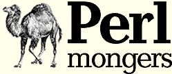

Cincinnati.pm *
The Greater Cincinnati Area Perl Mongers Group
Who Are the Cincinnati Perl Mongers?
We are a local Perl Mongers group for the
greater Cincinnati, Ohio area.
We meet monthly with alternating social gatherings and presentations and discussions.
The Mailing List
If you are interested in joining or hearing about Cincinnati.pm, please join the mailing list.
It is low volume.
One can subscribe to the mailing list by visiting
http://mail.pm.org/mailman/listinfo/cincinnati-pm.
Meeting Times
2012 Meetings:
- February 15 at 7:00PM at Hive13
- April 18 at 7:30PM at Hive13
- June 20 at 7:30PM at Hive13
- August 15 at 7:30PM at Hive13
- October 17 at 7:30PM at Hive13
Hive13 is in the Anchor Building, 2929 Spring Grove Ave, Cincinnati, OH.
Look for the glass block window that is lit up with LEDs.
The door is located directly below it. Go in and up the stairs to the right.
If the door is shut call us at (513)593-9292 to let you in or wait for someone to arrive and let you in.
Who (re)Started This Group?
During one of the weekly meetings at the hackerspace a bunch of us mentioned using Perl then some of us
started talking about having our own meetings.